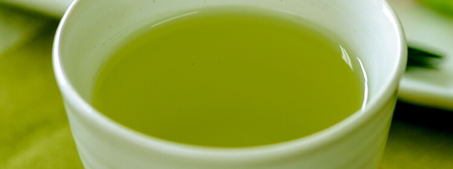
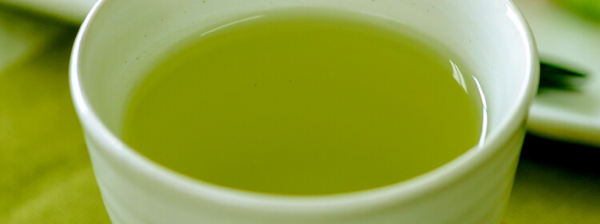

- 商品名
- 抽出目安
- お湯出し
- 水出し
- 定番商品
- 季節限定商品
-
- 4月予約開始～6月末頃※静岡まるごとさんかく茶
- 5gティーバッグでお湯約500mLに対応
［詳しくはこちら］
※年度により販売期間が異なる場合がございます。
※〇印は推奨のご使用方法です。▲印はお湯出しと比較すると出にくいため、かき混ぜたり、ティーバッグの量を増やしたりして濃さをご調整ください。


※年度により販売期間が異なる場合がございます。
※〇印は推奨のご使用方法です。▲印はお湯出しと比較すると出にくいため、かき混ぜたり、ティーバッグの量を増やしたりして濃さをご調整ください。
| 商品名・抽出目安 | お湯 出し |
水 出し |
|
静岡まるごとさんかく茶
▶ 5gティーバッグでお湯約500mLに対応 |
||
|
水出しまるごとさんかく茶
▶ 10gティーバッグで水約750mLに対応 |
※年度により販売期間が異なる場合がございます。
※〇印は推奨のご使用方法です。▲印はお湯出しと比較すると出にくいため、かき混ぜたり、ティーバッグの量を増やしたりして濃さをご調整ください。
 

MARUGOTO SANKAKU CHA
ご家族で日常的にご利用されている方に嬉しい大容量タイプ。 大容量だから、1ティーバッグあたりの単価もお求めやすくなっております。定期お届けなら、さらに10％オフになります。
一番お買い求めいただいている売れ筋サイズがこちらです。渋みのない、マイルドな味わいでお子様からお年寄りまで幅広い世代に安心してお飲みいただけます。
売れ筋の40個入りの半分のサイズです。まずは試しに飲んでみたい、他のお茶と日替わりで気分で変えて飲むのが好きという方におすすめのサイズです。
ティーカップ、湯飲み茶碗で1杯ずつ飲みたいという方向けに、1ティーバッグあたりの茶葉を半分の2.5gにし、取り出しやすいようにティーバッグに紐をつけたタイプです。淹れたて熱々の一杯をお愉しみください。
これさえあれば、急な来客があっても、あっという間にきれいでおいしい緑茶でおもてなしすることができます。個包装になっているので、会社や旅行など、どこへでも持ち運べて、ご友人に配ることもできて、とっても便利です。
FOR MY BOTTLE
マイボトルにポンと入れるだけの手軽さを追求！水出しでもおいしくできるよう、まるごとさんかく茶の香ばしさの要である、玄米（煎り米）の焙煎を通常より強くしています。忙しい方には特におすすめの商品です。ティーバッグ1個に対し、約300mLの冷水または熱湯が目安です。
POWDER TYPE
“茶殻を捨ててしまうのはもったいない！お茶の栄養成分をまるごと摂りたい！”という願いを叶えた商品。選び抜かれた国産緑茶も色合いが鮮やかで渋みが少ないまろやかな茶葉を厳選しています。1日1g（0.5g×2杯）で、シールド乳酸菌Ⓡ100億個とカテキンも摂ることができます。粉末だから、アレンジの幅も広がりますね♪
（シールド乳酸菌は森永乳業の登録商標です。）
ROASTED GREEN TEA
根強いファンもいるほうじ茶タイプ。まろやかでコクのある味わいを出すために、ほうじ茶を焙煎する際にわずかにできる粉末状の茶葉「ほうじ粉」をブレンド。まるごとシリーズファンなら試してみる価値ありです。
SHIZUOKA MARUGOTO SANKAKU CHA
本場静岡県産の摘みたての新茶を使用した期間限定の特別な品。渋み・苦みが少なくやさしい甘みが特長の一番茶を中心に使用。急須をお持ちでないご家庭でも手軽に緑茶をお愉しみいただけるので、贈答の品としても喜ばれます。
※年度により販売期間が異なる場合がございます。
MIZUDASHI MARUGOTO SANKAKU CHA
1ティーバッグあたり10gと通常の2倍の茶葉だから、水出しでもすぐに緑茶ができ上がります。また、煎り米の焙煎を強めているため、香ばしさもしっかりと感じられます。暑さの厳しい季節をキンキンに冷えた緑茶で喉を潤してください。
※年度により販売期間が異なる場合がございます。